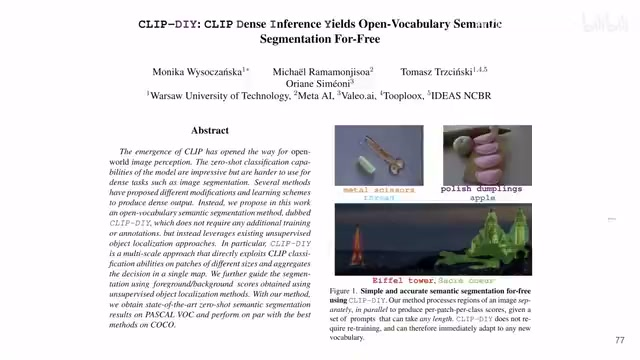
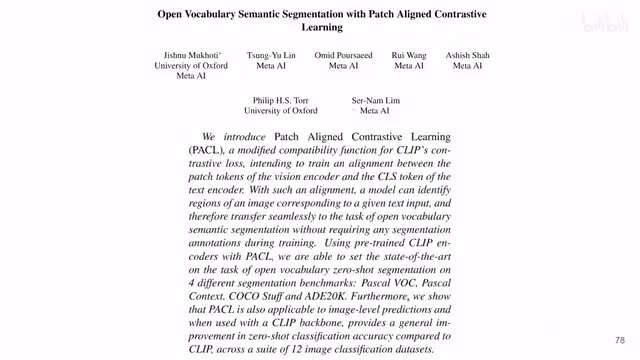
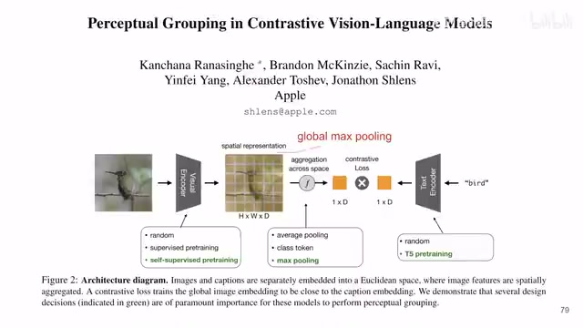
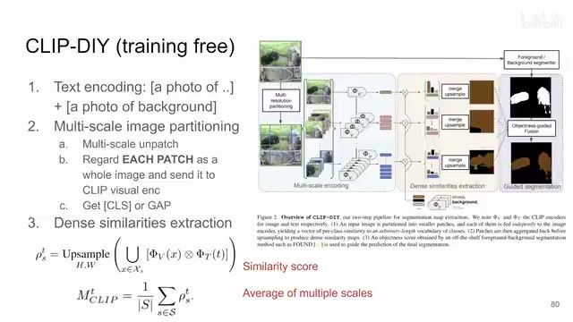
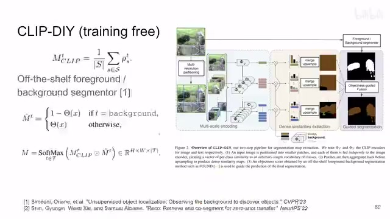
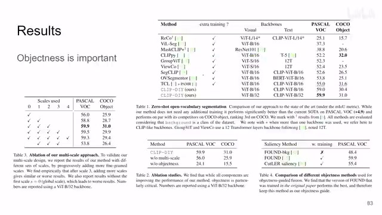
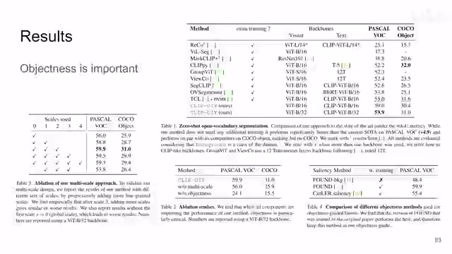

← 返回阅读库 · 原论文目录
论文讲解阅读文档 · 多模态语言模型 · v020
CLIP-DIY: CLIP Dense Inference Yields Open-Vocabulary Semantic Segmentation For-Free
视频时长 00:05:50；讲解文字 2,714 字符；提取讲解画面 8 张。按视频原顺序阅读，每段文字保留时间戳。
文字来自整段视频的自动语音转写，按自然停顿分段，并与 PPT / 论文页面 / 演示画面对齐。未将讲解压缩为摘要；术语、数字和口述公式请结合画面及原论文核对。 阅读稿已校正规范部分明确术语误识别；原始逐字稿和每处修改记录另行保留。
讲解画面为源视频截图（640×360），不是可编辑 PPT 文件。全片按每秒 2 帧扫描内容变化，逐步展开页保留；连续动画保留代表画面。清晰度受源视频限制。
下载完整资料包 · 含离线 HTML、PDF、Word、全部 PPT 画面和字幕。
原论文与材料
CLIP-DIY: CLIP Dense Inference Yields Open-Vocabulary Semantic Segmentation For-Free · 下载完整 PDF（15 页）
按时间阅读
00:00:00–00:00:25 · 画面 001

00:00:00–00:00:25 · 画面 001大家好,今天我们来快速水一篇论文 CLIP-DIY: CLIP Dense Inference Yields Open Vocabulary Semantic Segmentation for Free。这篇论文核心就是用已经 pre-trained 好的 clip 模型，同时用了一个已经 pre-trained 好的前景背景分割器，来做一个 open vocabulary 的语义分割的这样一个问题。说到用 pre-trained 好的 clip 做 open vocabulary semantic segmentation 之前，我们介绍过这一篇，还有和它类似的是这一篇。
00:00:25–00:00:28 · 画面 002

00:00:25–00:00:28 · 画面 00200:00:28–00:00:50 · 画面 003

00:00:28–00:00:50 · 画面 003那么这两篇的解法呢，都是你一张图像进到 image encoder 之后，提取出每一个 patch level 的更加详细的这种 feature，然后呢再做相应的训练，让每一个 patch level 的 feature 能够和真正的语言这边对应上。那这是这两篇已经有的工作。但是本文强调的就是，我现在不要训练，但是你不训练怎么获得更加 low level 的 feature，怎么能够对更小的一个 patch 做标记呢？本文的方法很直接，就是我把一张小的 patch 当成一张图片来处理就好了，就这个样子，通过多次的 inference 来达到我不需要训练的目的。那么我们继续来看，我们现在的问题是 semantic segmentation，那你的用户需要给这个模型提供一系列。
00:00:50–00:02:50 · 画面 004
00:00:50–00:02:50 · 画面 004你需要分割的东西。就是你告诉你的模型。你想在这个图中找到什么。那么这个模型呢就会生成一句一句的话。每一句呢就是 clip 做分类的时候。那样的 prompt a photo of 什么什么什么什么就是你想要分类的东西。那么最后呢当然也要加一类就是 a photo of background就是这个东西它不是任何我们想找的东西。
那么这个呢是文本的处理当然每一句话对吧都是送到 text encoder 里面提一个 embedding 出来就好了。这是第一步那么第二步呢我们开始处理图像。就像我们一开始说的。这篇文章因为它不训练。但是不训练又想获得这种 low level 的patch level 的这种 feature怎么办那就是把每个 patch送到 encoder 里面提一个 feature你如果是用 vit就提这个 classification token你如果是用 resnet就用这个 global average pooling
这个出来的 feature 来得到它。那么当然本文的一个特点呢。在于它是一个 multiscale你看到这里对吧它是有很多个层次第一个层次就是一整张图提一个 feature 那第二个层次画成比较大的 patch 提一些 feature 那第三个层次画成更小的 patch 提一些 feature 那么这个呢是本文的处理那处理完这些之后呢你就相当于每一个不同尺寸的 patch 你都有一个那么你拿到这一系列的 feature 你就可以跟你的 text 做 similarity 了嘛你每一个 image embedding 和这个 text embedding 它们总能算出一个 similarity
那么算好之后你再把这一个个 patch 重新排回到他们原来的这个 2D 的这个位置，然后呢你再做一个上采样，把这个图像放大成原始图像的尺寸，那就得到了这一个尺度下面的这个 similarity score。
00:02:50–00:03:24 · 画面 005

00:02:50–00:03:24 · 画面 005那这个 S 呢就是不同的尺度，这个 T 呢就是我们前面说的文本，你最后呢就是每一个图像的尺度，每一个文本都对应一张原始图像大小的这么一个相似度的图。你沿着不同的尺度把这个相似度给它求平均，那么求完平均之后每一个文本它就只对应了一张图，那这张图里面每个相似的具体值它就应该是和你这句话文本中描述的那个物体的它们的相似的程度。
00:03:24–00:04:40 · 画面 006

00:03:24–00:04:40 · 画面 006那么本文最大的一个 trick 呢，它拿到每一个物体的这个 similarity score 之后呢，它并不是直接设置一个阈值直接拿去用，它并不是这样的。它呢是把这个原始的图像送到了一个这个前景背景分割器，比如说第一篇这里介绍了这个 Found，那么当然它是人家培训好的嘛，那么这个分割器输出的图就是一个 binary mask，选中的就是前景，没有选中的就是背景嘛。那得到这个 mask，你针对不同的。
你要分割的物体进行复制，这个 segmenter 本身它是不接受任何 text 输入的。那么对于一般的物体来说呢，你就直接把前景的 mask 作为这个物体的 mask，当我们想要获得背景的那个 mask 的时候，我们要记得把它的输出给它翻转一下，那这样子就获得了针对每一个物体的这么一个 mask。那最后作者做的操作呢，是你原来有的这个从 clip 来的这个 similarity score 和你的这个 mask。
做一个乘法吗？相当于用它做出来的一个大的 filter。然后呢，你就针对每一个物体，你都有这样一个图。那最后非极大值抑制，你每一个像素的位置上用 softmax 选一下谁的概率最大就好了。那这个呢，就是最终本文怎么样？没有经过，没有经过任何训练，把一张图给它出了出来。那就是这个流程。那我们直接来看结果啊。
00:04:40–00:05:50 · 画面 007

00:04:40–00:05:50 · 画面 007首先是一些标准的 benchmark。那这边的 ablation 包括我的这个一开始 multiscale 的时候，我的尺度用哪些尺度？0 是这个 global 的，就是一整张图丢进去。那么这边是大的 patch，然后 patch 的尺寸逐渐变小。那么这里作者最终选了一个组合。再往下，这边这个其实比较有意思的，multiscale 的作用还有这个 objectness，也就是我们说的这个前景背景分割器的作用。你可以看到呢，其实真正有用的呢，是这个 objectness。它对性能的影响是非常关键的。这个观察呢，就让这篇文章的价值变得有那么一点微妙啊。
那么当然，这里作者还试了我用什么样的 segmenter 比较合适。那发现 pretrained 好的 FOUND 就可以了，也不用做任何的训练。反正就是别人已经替我训练好了，所以我就可以不用训练了。所以总的来说呢，这一篇啊，还是又回到了我们之前说的，如果不幸流落荒岛啊，咱需要做一个 segmentation 任务，但是呢，手头只带了 cliff，只带了这个前背景的 segmenter，而且呢，你还不能做训练。这个时候呢，本文是非常有价值的。好的，那么以上就是我对这个文章的一个快速的梳理。那么感谢您的收看，再见。
00:05:50–00:05:50 · 画面 008

00:05:50–00:05:50 · 画面 008转写与来源说明 · 1 个自动复核提示
保留 53 个原始语音片段，1 个片段触发自动复核提示。提示仅用于定位可能的术语、重复或识别问题，不等于已确认错误。
讲解画面为源视频截图（640×360），不是可编辑 PPT 文件。全片按每秒 2 帧扫描内容变化，逐步展开页保留；连续动画保留代表画面。清晰度受源视频限制。
原视频：paper/合集_2026-10-16_多模态语言模型/[论文简析]CLIP Dense Inference Yields Open-Vocab ... For-Free[2309.14289].mp4
SHA-256：bdfd24dfba7ccc00061ac44eb4e5fac5fe34d55dec4dcdc5231c61e78ca74c23
就是 a photo of background
全文按视频语音与画面制作。原论文可从上方链接下载；完整资料包保留全文、原始逐字稿、字幕和校对记录。